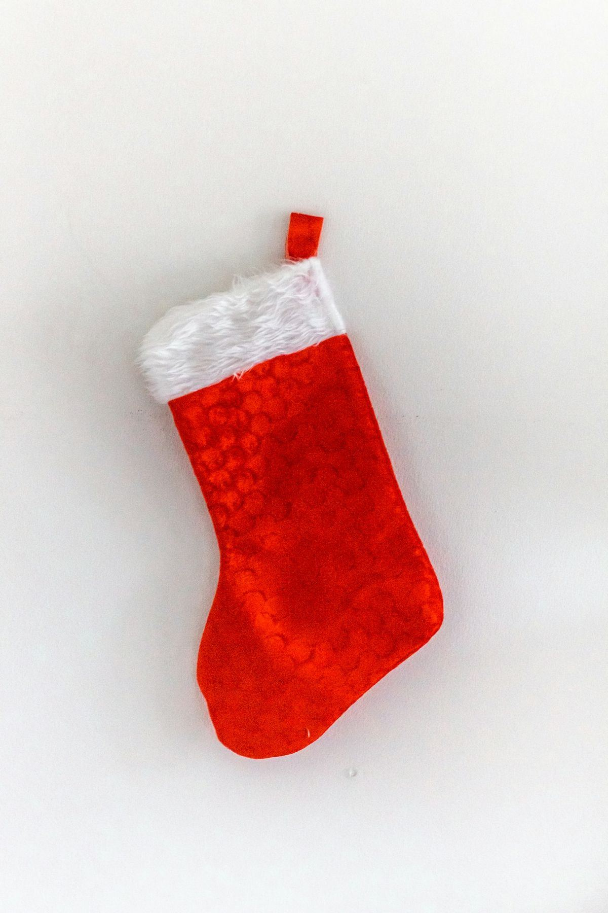

Gift guide
Stocking Stuffers for Fitness Lovers

This guide contains affiliate links. If you buy through them, Holistic Life may earn a small commission at no extra cost to you. How we use affiliate links.
Quick answer
- Good fitness stocking stuffers are small, useful and easy to use right away.
- Walkers like warm hands and cushioned socks. Lifters like bands and grip tools. Stretchers like a massage ball.
- For a coworker exchange, choose something that suits almost anyone, such as a bottle or a towel.
- Skip anything that needs a size, and skip powders and supplements.
A good stocking stuffer is small, easy to wrap and used within the week. For people who exercise, that means gear that wears out, goes missing or just makes a workout a bit nicer.
This is a nurse-run site, and the picks here are all everyday items. None of them depends on a size or a taste, which makes them easy to buy for someone you do not know well.
Ideas by type of person
The walker. Think warm and comfortable. Hand warmers, cushioned socks and a headband for cold mornings suit most walkers. For a bigger idea, see our gifts for people who love to walk.
The lifter. Small tools are welcome: a grip strengthener, loop bands and a workout log to track sets. If you want to go larger, our home gym gifts for small spaces covers the next step up.
The yoga or stretching fan. A massage ball, a cooling towel and a soft headband fit well. They support a quiet routine without needing any gear to set up.
Ideas for a coworker gift exchange
Exchanges work best when the gift fits almost anyone. Choose something useful that does not send a message about someone's body or goals.
- A cooling towel or a set of headbands
- A bottle with a leakproof lid
- Hand warmers for winter commutes
- A workout log notebook or a small massage ball
- A lip balm with SPF
Keep it light and avoid anything tied to weight, size or diet. A gift should feel kind, not like a hint.
The stocking stuffer list
The links open a current selection on Amazon. Each pick lists what to look for, so you can shop well in any store.
Fabric mini loop bands
A set of loop bands adds resistance to leg and glute work, and the pouch fits in a purse.
What to look for
- Fabric, not thin latex, so they do not roll or pinch
- Three or more resistance levels
- A storage pouch included
See loop bands on Amazon (paid link)
Grip strengthener
A small spring grip is easy to use at a desk or while watching TV, and lifters like it for carrying heavier weights.
What to look for
- Adjustable or labeled resistance
- A comfortable handle with a non-slip surface
- A size that suits the user's hand
See grip strengtheners on Amazon (paid link)
Massage ball
Rolling a ball under a foot or against a wall feels good after a workout, and it takes almost no space.
What to look for
- A firm rubber or foam ball, about the size of a lacrosse ball
- A textured version for the feet
- A mesh bag or carrying pouch
See massage balls on Amazon (paid link)
Jump rope
A rope is a classic short warm-up, and it packs into a gym bag.
What to look for
- An adjustable length
- Smooth handles with a swivel
- A softer cable for beginners
See jump ropes on Amazon (paid link)
Sweat-wicking headbands
A headband keeps hair and sweat out of the eyes, and a multipack covers the days one is in the wash.
What to look for
- Stretchy, moisture-wicking fabric
- A non-slip inner band
- A wide fit for all head sizes
See headbands on Amazon (paid link)
Cushioned no-show socks
Workout socks wear out fast, so a few new pairs are always welcome.
What to look for
- Moisture-wicking fabric
- A heel tab that keeps the sock from slipping
- Arch support and a seamless toe
See athletic socks on Amazon (paid link)
Shaker bottle
A bottle with a mixing ball suits anyone who mixes their own drinks, and a leakproof lid makes it easy to toss in a bag. We mean the bottle only, not what goes in it.
What to look for
- A secure, leakproof lid
- Dishwasher-safe parts
- Volume marks on the side
See shaker bottles on Amazon (paid link)
Cooling towel
A cooling towel feels refreshing after a workout and is light enough for a gym bag.
What to look for
- A fabric that stays cool when wet
- A long, narrow shape that rests around the neck
- A storage tube or pouch
See cooling towels on Amazon (paid link)
Hand warmers
For winter walkers, a pair of hand warmers in a coat pocket can make a cold morning walk much easier.
What to look for
- Reusable options, if you want less waste
- A multipack for the whole season
- Clear heat settings or instructions
See hand warmers on Amazon (paid link)
Resistance tube with door anchor
A tube with handles offers a full-body workout, and the door anchor means no wall hardware.
What to look for
- Handles that feel comfortable
- A sturdy door anchor and a safety sleeve
- A light to medium resistance for starters
See resistance tubes on Amazon (paid link)
Workout log notebook
Many people stay consistent when they can see what they did. A small notebook is quick to fill and satisfying to flip through.
What to look for
- A layout with space for exercises, sets and notes
- A cover that holds up in a bag
- A size that fits a pocket or a gym bag
See workout logs on Amazon (paid link)
Lip balm with SPF
Lips dry out in winter wind and summer sun. A small tube with sun protection suits almost everyone who spends time outside.
What to look for
- A clear SPF rating on the label
- An unscented, simple formula
- A size that fits a pocket
See lip balm with SPF on Amazon (paid link)
What to skip
- Anything ingested. Powders, pills, teas and bars are personal. We do not recommend them as gifts.
- Clothes in a guessed size. Socks and headbands are safe. Leggings and tops are not.
- Thin bands that roll or snap. Thin latex loops can pinch. Fabric bands last longer and feel better.
- Gadgets that need setup. A stocking stuffer should work right out of the wrapping.
How to build a stocking
Aim for variety. Choose one item to use during exercise (a jump rope or loop bands), one for recovery (a massage ball or cooling towel), one for comfort (socks or a headband) and one for planning (a workout log). That mix feels thoughtful, and it keeps the stocking from holding five of the same thing.
If you are shopping for several people, buy the same item in different colors. A set of headbands or socks is easy to split up, and you can tailor a few extras to each person.
Wrapping it up
Pick five or six items and tuck them into a tote or a small gym bag. The bag becomes part of the gift. Add a note that mentions one thing you hope they get to do with it, such as a walk together or a Saturday stretch.
Frequently asked questions
What is a good stocking stuffer for someone who works out?
Look for small items they will use right away, such as loop bands, a jump rope, a massage ball or a good pair of socks. These work for most levels and need no sizing.
What can I give for a work gift exchange?
Choose something almost anyone can use, like a cooling towel, a bottle or hand warmers. Avoid anything that depends on a size, a taste or a health goal.
Save this guide for later
Tap a pin to save it to your Pinterest boards.